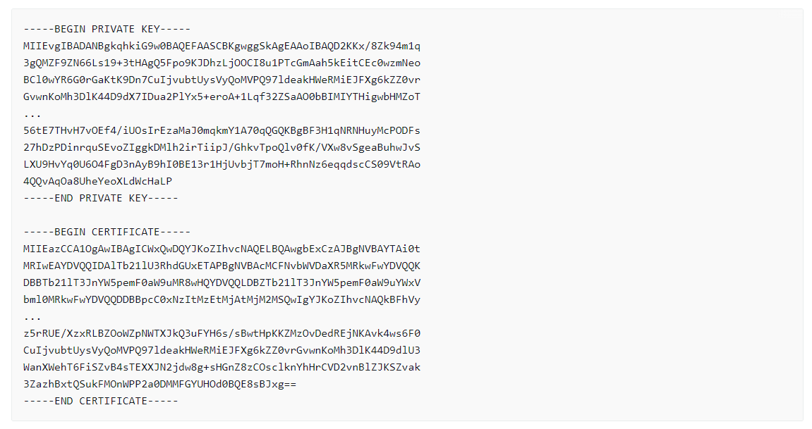

Config EC2 to apply ACM
When updating the certificate, it is necessary to perform operations not only on AWS but also on EC2.
Certificate body
- Run the script to generate a self-signed dummy certificate and key for testing
sudo touch /etc/pki/tls/certs/server.crt
※The specified file name matches the default that is assigned in the SSLCertificateFile.
- Change the value in the server.crt file with the value in the import certificate section.
sudo vim /etc/pki/tls/certs/server.crt

Certificate private key
- Change the value in the server.key file with the value in the import certificate section.
sudo vim /etc/pki/tls/private/server.key
Restart Apache
sudo systemctl restart httpd